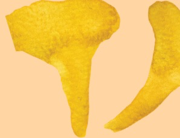
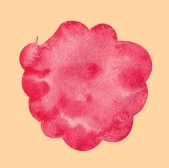
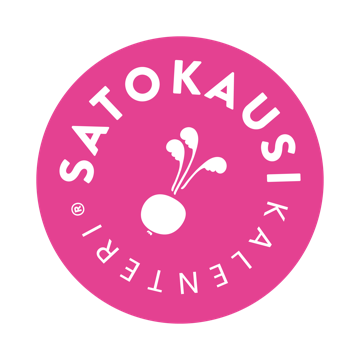
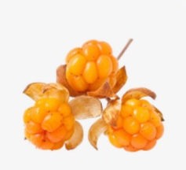
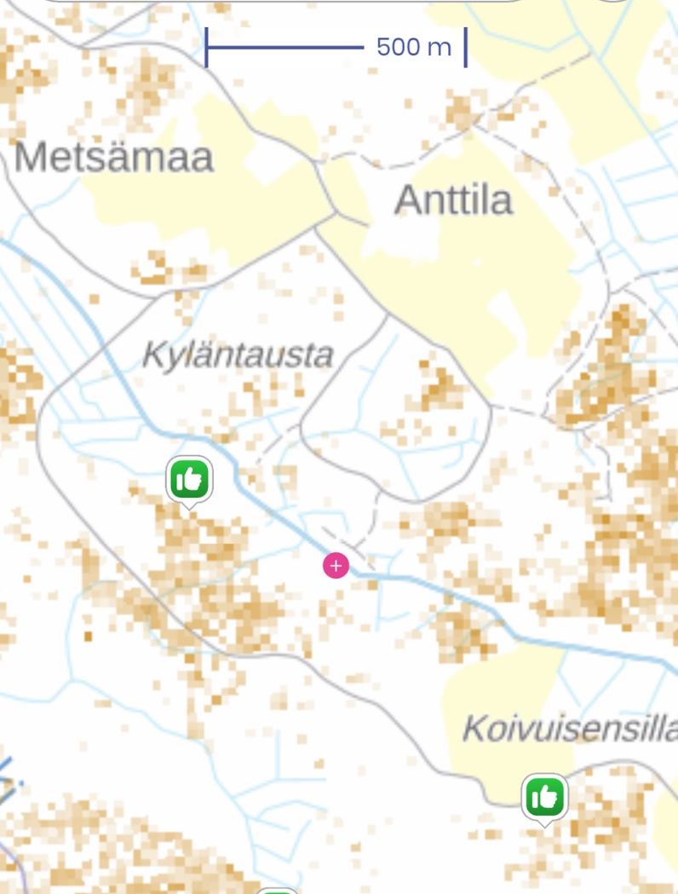
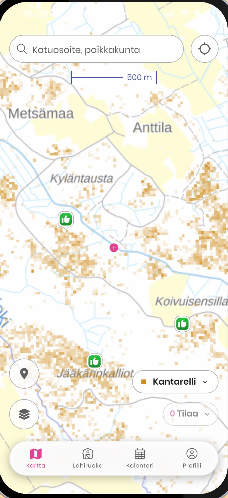

Growth Audit · November 2026
Five ideas to turn more foragers into subscribers. Each one built into your own onboarding, so you can tap through it.
Why you’re seeing this
Adapty runs subscriptions for more than 30,000 apps, so we see which onboarding and paywall changes lift revenue across the whole market, not just inside one app.
We pointed that at Satokausi. We took your own screens, copy and prices from your App Store listing, its reviews and your Meta ads, and rebuilt the path from install to paywall around the five ideas with the most potential.
We’re not proposing to rebuild every screen. These are the changes with the highest potential, ranked by what we’d test first.
Every colour, control and price in the prototype is Satokausi’s. We changed the order and what gets shown.
We work from the outside, so we can’t see your live flow or your test history. If you’ve already run one of these, tell us and we’ll go deeper on the rest.
The shortlist
Potential outcome, based on Adapty data
Your ads × your flow
Your summer ads promise “parhaat kantarellipaikat”, “parhaat mustikka-, puolukka-, lakka- ja vadelmapaikat” and porcini at “19,99 €”, and most say “Lataa ilmainen sovellus”. Yet every install opens the same app, where blueberry is the one free species and everything else waits in the paid version.
Flow Builder can open a different first launch for each campaign an install came from, so the first screens keep that ad’s promise, and each ad is judged on the subscriptions it brings, not the installs.
Left to right: someone from your chanterelle ad, your berry ad and your porcini ad. Tap Today to see where all three land now, then tap through the proposal, or jump straight to an idea.
Meta adFind chanterelles
Meta adPick berries
Meta adFind porcini
Tap through any phone and the others follow. A dot marks the screens that differ by ad.
After a one-time SDK setup alongside your current subscription stack, the Meta campaign each install came from arrives as a user attribute and picks the first launch. No app release.
Chanterelle, berries and porcini each get their own first screens; installs from search and word of mouth keep today’s map.
Each version against today’s, measured on purchases and what each install from that ad earns, so next summer’s spend follows the species that pays.
All three phones run the whole flow with the five ideas. Your ads ran from mid-July to late October and none is live now, so this is a plan for next season, or for your print-calendar ads, which already reach people who cook with the seasons. We found no Apple Ads for the app. Two chanterelle versions link to Google Play. This layer carries no range: only a test per ad can give one.
The prototype
Tap through it like a new user, or jump straight to an idea. Green numbers mark the screens that carry one.
Kyllä niitä kantarelleja on, mutta missä? Satokausi-sovelluksen kartalta 🗺️ löydät parhaat kantarellipaikat. Lataa ilmainen sovellus heti tästä!
Älä mene marjametsään ilman tätä: Satokausi-sovelluksen kartalta löydät parhaat mustikka-, puolukka-, lakka- ja vadelmapaikat 🫐. Lataa ilmainen sovellus heti tästä!
Tiedätkö, mistä herkkutatteja kannattaa etsiä? Satokausi®-sovellus tietää. Kaikki sieni- ja marjakartat vuodeksi 19,99 €.



The map shows where chanterelles are most likely to grow near you. Darker squares, better odds.
The blueberry map is free. Lingonberry, cloudberry and raspberry are a tap away.
Every mushroom and berry map for a year: 19,99 €. As in the ad, no surprises later.
★ 4,3 · 411 ratings on the Finnish App Store
We’ll open the map right there. A forest has no street address.
Your ad named four berries. Pick the one you go out for after blueberries.
Berries
Porcini comes first. Pick the rest and we’ll put them on your map too.
Mushrooms
The darker the square, the better the odds. Pin it and it’s still here next season.

Our biologist’s formula, square by square: light, soil, how close the trees stand. Your other picks sit one tap away.

Renews every year. Cancel any time in your device settings.
That’s 1,67 € a month, and the year doesn’t stop when the berries do.
Renews every year. Cancel any time in your device settings.
Viime vuonna löysin aivan uusia, entistä parempia puolukkapaikkoja, nyt ensimmäisestä kantarellipaikasta yli 10 l puolessa tunnissa.
★★★★★ · App Store, 9.8.2025On your map
Renews every year. Cancel any time in your device settings.
One notification when is ready to pick. The blueberry map stays free.

Close any paywall with ✕: it asks to remind them when the season starts, never a second price.
Scan to open the prototype full screen, the way a new user would see it.
Want these flows live for next season? Every screen here can be built in Adapty Flow Builder and tested against today’s, one ad at a time.
Book a demo